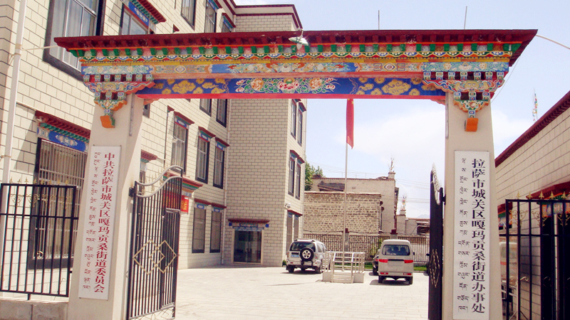

嘎玛贡桑街道办事处简介
嘎玛贡桑街道办事处位于拉萨市城关区东部，与纳金乡、老城区为邻。嘎玛贡桑街道地势平坦，居住人群主要是原失地农民、本地居民和各部门退休人员为主。辖区经济强劲，酒店业蓬勃，以坐落于俄杰塘社区的圣峰国际假日酒店为主，各种特色的家庭式旅馆和小酒吧，形成辖区内休闲娱乐购物场所齐全。街道属于典型的城乡结合部街道，基础设施相对滞后，上级部门的支持下辖区内正在进行全面的基层设施改造，辖区总面积3.2平方公里。
街道党委、办事处成立于2001年，现有干部职工55人，下辖俄杰塘、嘎玛贡桑、统建、纳金路北4个社区居委会。有3个老年文艺队，3个志愿队（党员志愿队、老年志愿队、青年志愿队）。
辖区内有自治区属单位4个、拉萨市属单位12个、城关区属单位6个、企业18家、宾馆17家、市属中学1所、幼儿园2所、大中型娱乐场所2处。